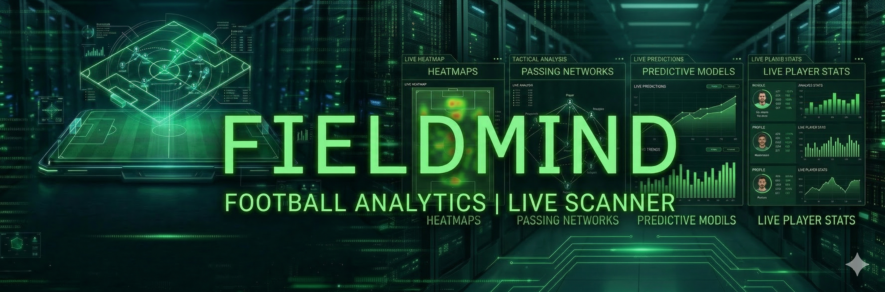
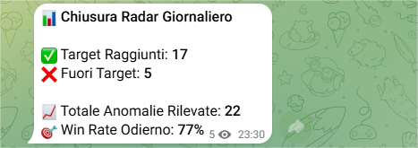

+70,73€ netti in soli 6 giorni
con stake fisso 10€
37 giocate, 24 vinte, ROI +19,12%. FieldMind intercetta la pressione offensiva live e ti invia l'alert prima che la quota crolli.
Non solo i giorni positivi
La credibilità non nasce nascondendo i giorni difficili. Nasce mostrando il quadro completo.
Come funziona davvero
Niente fumo. Niente sensazioni. Solo live, dati e timing.
Monitora
FieldMind segue centinaia di partite live in tempo reale.
Rileva
Quando la pressione offensiva sale davvero, il sistema intercetta il momento giusto.
Invia
Il segnale arriva su Telegram in tempo reale, prima che il momento migliori o sparisca.
Guarda come funziona davvero
Nessuna teoria. Solo segnali live reali.
La prova è nel campo
Alert reali. Esiti reali. Report completi. Nessun ritaglio furbo.



Perché i segnali arrivano prima
Dietro FieldMind c’è un motore che filtra rumore, segue il live e individua i momenti in cui il match cambia davvero.
Scansione live
Analizza simultaneamente più partite e più mercati.
Pressione offensiva
Legge ritmo, tiri e intensità dei minuti recenti.
Filtro anti-rumore
Riduce falsi segnali, dump statistici e anomalie live.
Alert immediati
Il segnale arriva su Telegram quando conta davvero.
Il prossimo alert sta per partire.
Sei dentro o lo guardi da fuori?
FieldMind non si misura sulla singola giocata. Si misura sulla continuità, sulla disciplina e sulla capacità di restare profittevoli nel tempo.
VOGLIO ENTRARE NEL CANALE ORAGli alert stanno partendo ora. Entra prima del prossimo.